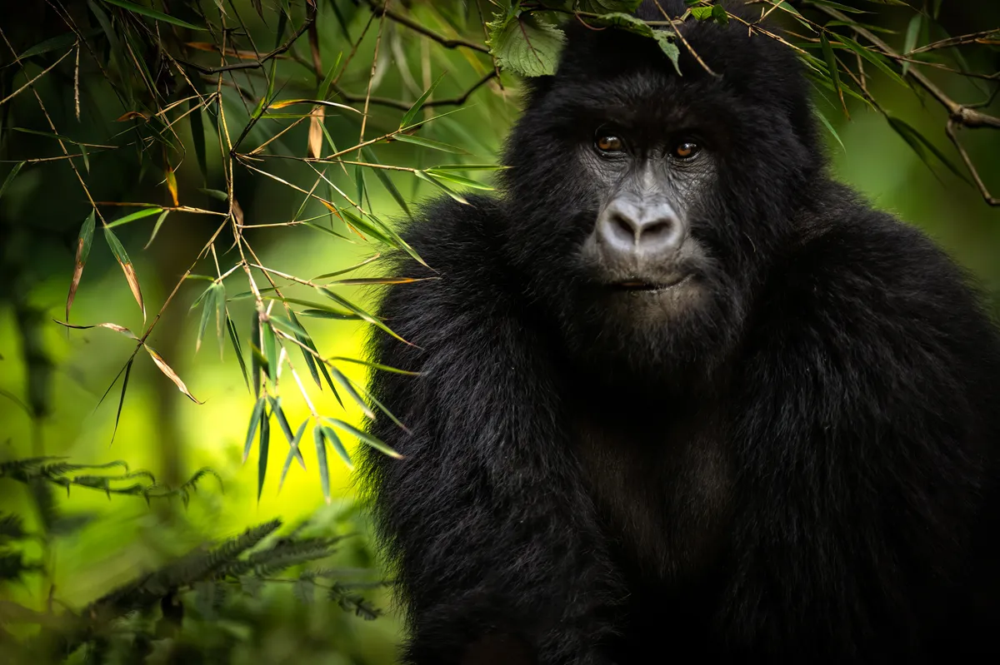

Conservation
The Light at Bwindi: A Morning With the Mountain Gorillas
There is a particular quality of light in Bwindi at 7am — green, filtered, ancient. We had been waiting for forty minutes when the undergrowth moved. Then, with a silence that felt almost deliberate, a silverback emerged. He sat less than four metres away and looked at us as though he had been expecting us all along.